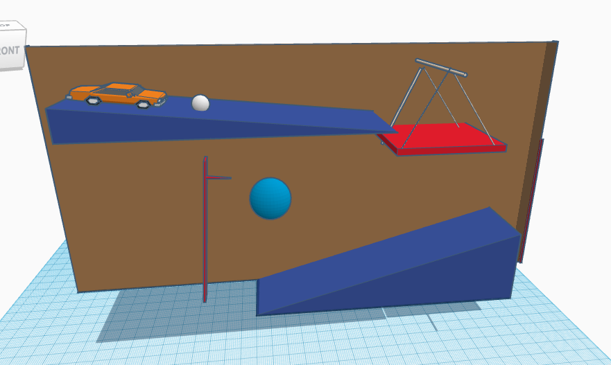

My Super Aesthetic Cutie Patootie Journal

8/21/23 - 8/24 Week 1
This week in Intro to Engineering I learned what a Rube
Rube Goldberg machine is. I also learned how to keep myself safe in
class. We saw different videos on how to keep ourselves safe, what
the consequences are for not keeping yourself safe, and what may
happen if you don't use the proper safety materials. I also
learned basic codes amd how to use AWS. We got introduced
to different websites including GitHub. To end our week we did
a game with marbles and sticks to see which team could finish
the fastest.

8/28/23 - 9/01/2023 Week 2
This week in Intro to Engineering I learned how to use
TinkerCad and we took our first quiz. We learned more about
Mechanical Engineering and safety in engineering class.
Ms. Petrosian showed us multiple videos on safety, and
one on ivention and innovation. We began to plan out our
Rube Goldberg machines with our groups and began to build
it on TinkerCad. We also took notes on mechanical engineering
safety, and how to be successful in the engineering process.

9/05/23 - 9/08/23 Week 3
This week in Intro to Engineering we started our first phase of
building our Rube Goldberg machines. We came across some
complications but soon overcame them and began our project.
We used our example from TinkerCad to help us build it.
We built the layout of the project and are looking for more
inspiration to help us build the machine.
9/11/23 - 9/15/23 Week 4
This week in Intro to Engineering we finished our Rube
Goldberg Machines. Due to my partner being sick and having
to leave multiple groups, we fell behind but still managed
to finish the project. It was a little frustrating to build it
but we came up with multiple different ideas and we were
successful. We failed multiple times but we fixed the problems
and learned from our mistakes. We're going to test our project
next Monday to see if our machine was a success.
9/18/23 - 9/22/23 Week 5
Thi week in Intro to Engineering we did two different challenges.
We did a challenge on a flotation device to see whos could last
the longest. At first I wasn't positive that it was going to work
due to it being too heavy, but then I removed some weights and it
allowed it to float. Our second project was to make a paper E with
the proper dimensions. I made my 'E' a little too big causing the
person that built the 'E' to face complications.
9/25/23 - 9/29/23 Week 6
This week in Intro to Engineering we dissected a computer.
We learned the different components and parts of a computer.
We took a quiz on what we learned about the different parts
of a computer and on computer engineering. I feel like I learned
a lot more on what there is to know about engineering. I like the
fact that there's always something new to learn in the engineering
process.